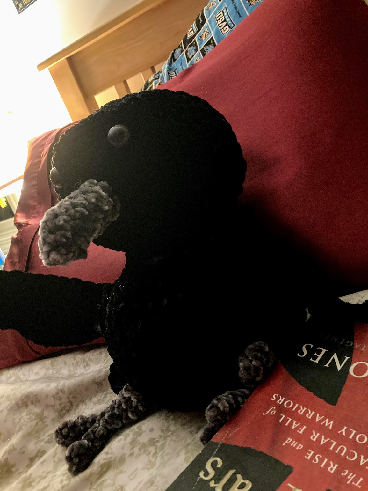
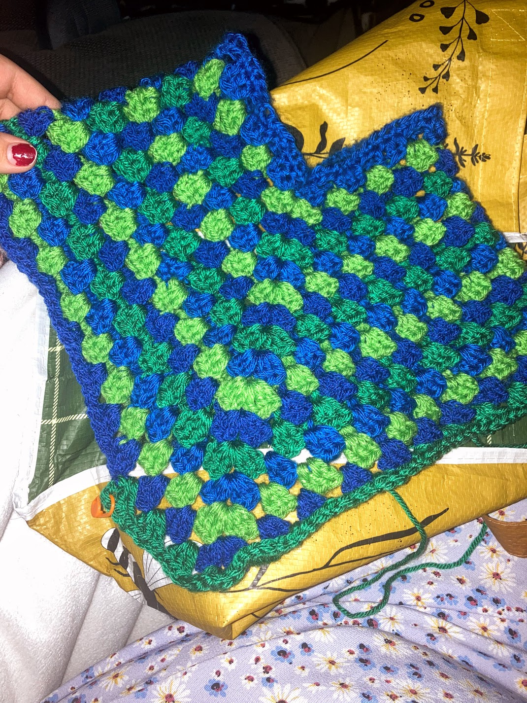
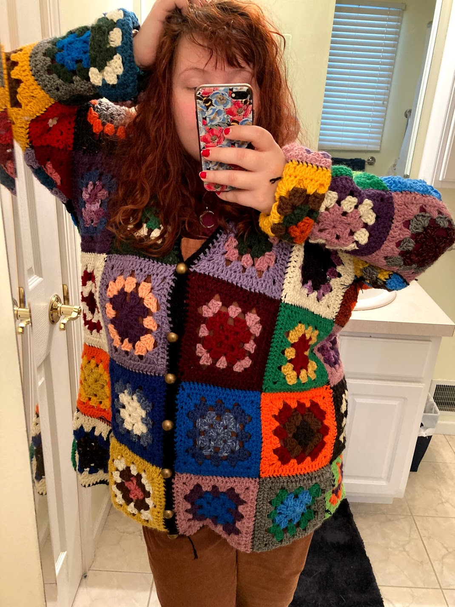
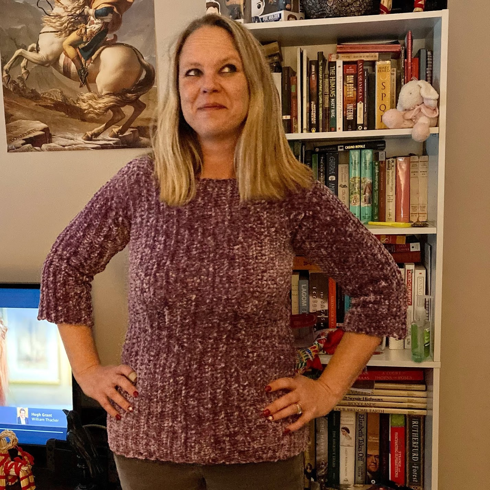
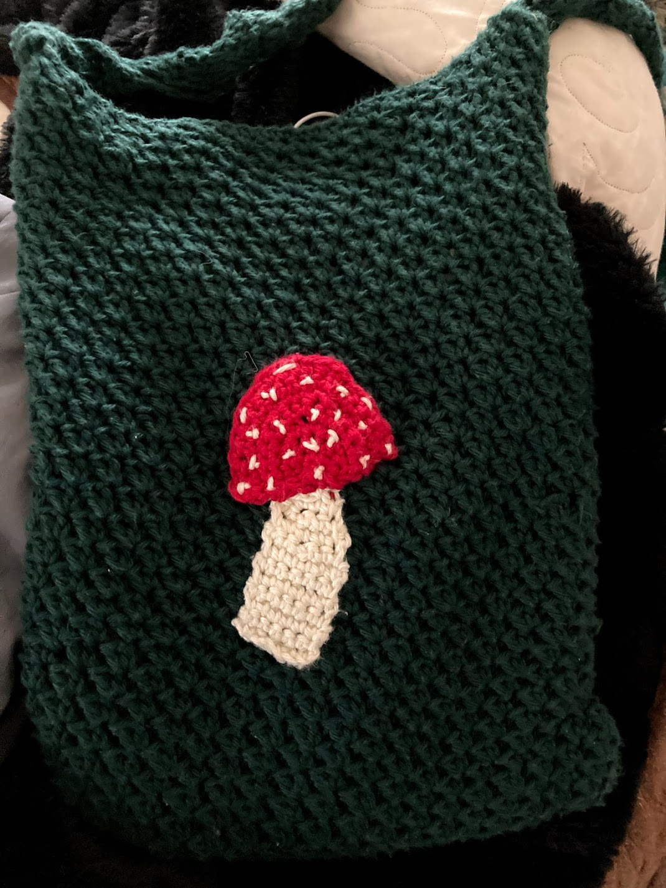
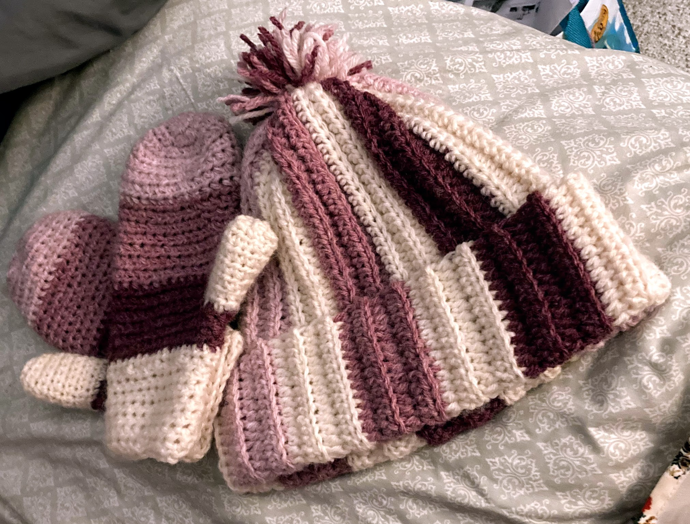

Projects



Edgar the crochet raven.
A poncho I made for my cousin Finn's second birthday.
A granny square cardigan. It was my first cardigan.
  my mother standing in front of my bookshelf wearing a sweater I made her. I have a matching one.
I saw a similar mushroom purse on Reddit so I recreated it.
I fell in love with some pink yarns and made myself a new hat and mitten set.